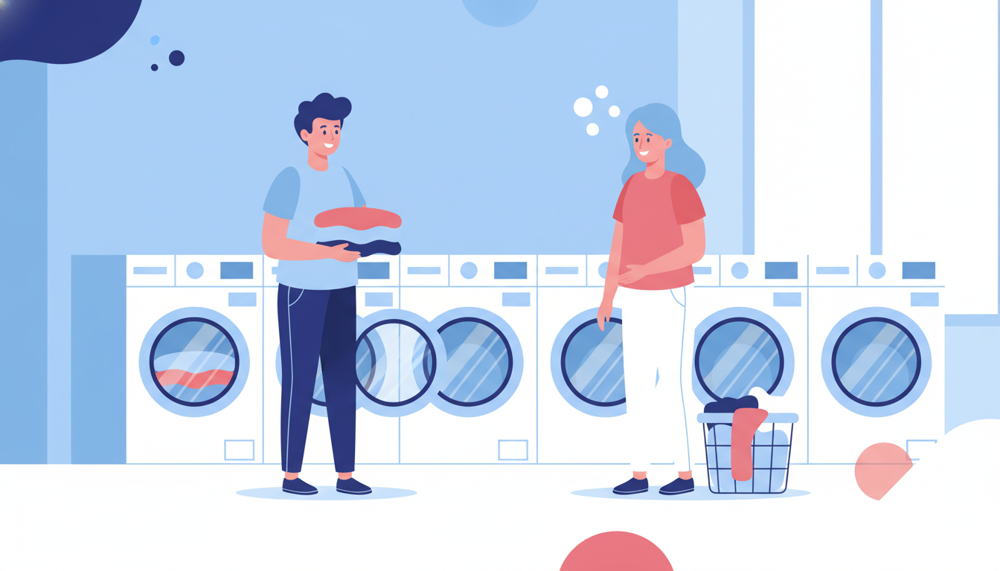

Laundromats are shared spaces — machines, benches, folding tables, all used by complete strangers — and somehow, most of the time, it all just works. That's because most people follow a set of unwritten rules. Think of this as your friendly guide to being the laundromat neighbour everyone appreciates.
Before You Start
A bit of preparation at home saves everyone time and hassle — including you.
Check your pockets. Coins, tissues, pens, lip balm — give every pocket a check before you leave the house. Nobody wants to open a dryer and find their clothes covered in shredded tissue. And if you've ever left a pen in a pocket, you know that story doesn't end well for anyone's whites.
Sort your laundry at home. Doing darks and lights? Sort them into separate bags before you head out. It saves time and means you're not spreading your entire wardrobe across the folding table while you figure out what goes where.
Empty the lint trap. Check the dryer's lint filter before and after you use it. Clearing it before your cycle means your clothes dry faster and more evenly. Clearing it after is just good manners — leave it clean for the next person.
While Your Clothes Are Washing
Once your load is running, the clock is ticking — and not just on the machine.
Stay nearby or set a timer. We've all seen it: a machine finishes and the clothes just sit there. Meanwhile, three people are waiting for a free washer. Stay in the laundromat if you can — bring a book, scroll your phone, whatever works. If you need to duck out for a coffee, set a timer so you're back before the cycle ends.
Don't open someone else's machine mid-cycle. Opening a washer mid-cycle interrupts the wash, can cause water to spill, and is generally just not your machine to touch. If you think something's malfunctioning, leave a note — but don't go opening doors that aren't yours.
When You're Done
The finish buzzer has gone. Here's where the good neighbours really shine.
Remove your clothes promptly. As soon as your cycle finishes, get your clothes out. This is the single most appreciated thing you can do in a laundromat. A machine full of finished laundry is a machine nobody else can use.
Wipe down the machine. Spilled detergent on the lid? Give it a quick wipe. Ten seconds, done.
Leave the door ajar. When you're done with a front-loader, leave the door slightly open so the drum can air out and that musty smell doesn't build up.
Take all your belongings. Socks love to hide at the back of dryer drums — do a final check. And take your rubbish with you. If you brought it in, take it out.
The Unspoken Rules
These aren't written on any sign, but seasoned laundromat regulars know them well.
Don't hog every machine. If it's a busy Saturday morning, maybe don't load up five washers and three dryers at once. Spread your loads out, or come back during off-peak hours for bigger sessions. Sharing the space means sharing the machines.
Handle other people's clothes with care. If someone's wash has finished and they're not around, it's okay to gently move their clothes to a clean surface so you can use the machine. Place them neatly on top of a dryer or on the folding table. Never put someone else's clothes on the floor. Ever.
Keep the noise down. Not everyone wants to hear your TikToks on speaker or your phone call echoing off the tiles. Pop in some headphones. The ambient hum of washing machines is actually quite peaceful — let people enjoy it.
Be friendly! A smile, a nod, a quick "all yours" when you vacate a machine — it goes a long way. Laundromats are one of those rare shared spaces where people from all walks of life end up side by side. A bit of friendliness makes the whole experience better.
At Laundry Day, we keep our machines clean, our spaces bright, and our vibes friendly. Come say hi at any of our three Melbourne locations — Brunswick East, St Albans, or Maribyrnong — and see what a good laundromat experience feels like.
Do Your Laundry the Easy Way
Clean machines, bright spaces, and zero card fees at all three of our Melbourne locations.
Find Your Nearest Location